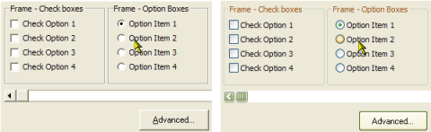

VB5 XP Styles Demonstration - Manifest File (18K)
VB5 XP Styles Demonstration - Manifest File (18K)
 VB5 XP Styles Demonstration - Manifest Resource (17K)
VB5 XP Styles Demonstration - Manifest Resource (17K)
 VB6 XP Styles Demonstration - Manifest File (17K)
VB6 XP Styles Demonstration - Manifest File (17K)
 VB6 XP Styles Demonstration - Manifest Resource (17K)
VB6 XP Styles Demonstration - Manifest Resource (17K)
 Bugs: 0 / 1
Bugs: 0 / 1
 Issues: 0 / 0
Issues: 0 / 0
 Questions: 1 / 1
Questions: 1 / 1
 26 Jan 2003
26 Jan 2003
The text incorrectly stated that the Manifest in the resource file had to be all on one line, thanks to Thomas Kessler for correcting me on this.

Adding XP Visual Styles to Your Visual Basic Application
 When you run a Visual Basic application on an XP machine, you will see that although the form gets an XP-style title bar, the controls on the form still draw in the old-fashioned Windows style. However, it doesn't take much to persuade an application to use the new styles. In some cases, you can get existing applications to use the new styles with no additional code whatsover!The New XP Styles
The Windows XP Visual Styles are provided by ComCtl32.dll version 6 or later. (In fact, anyone who is as old as me and remembers back to Visual Basic 3 may find this familiar, since the exciting 3D control look which was provided with Windows 95 was also implemented in the same way). Note that unlike previous versions of this DLL, version 6 is not redistributable - which sadly means you can only use the visual styles on an operating system that has this version installed. At the time of writing this means XP only.
ComCtl32 does not apply the latest styles to the client area of an application by default. In order to enable it, you need to ensure that your application is linked to ComCtl32.dll (by calling the ComCtl InitCommonControls API call) and then you need to provide a Manifest which specifies that the new version of the control styles should be used.
Manifests
Manifests are part of the technologies introduced by Microsoft to attempt to resolve the DLL versioning conflicts (normally referred to as DLL hell) so common in Windows development. You can read more about these technologies and manifests in the Windows XP Technical Article "How To Build and Service Isolated Applications and Side-by-Side Assemblies for Windows XP" at MSDN. However, for this article all you need to know is that to use version 6 of the common controls you need to be able to provide an XML document known as a Manifest to ComCtl32.
The manifest XML document required to use XP Visual Styles is as follows:
<?xml version="1.0" encoding="UTF-8" standalone="yes" ?>
<assembly xmlns="urn:schemas-microsoft-com:asm.v1" manifestVersion="1.0">
<assemblyIdentity
version="1.0.0.0"
processorArchitecture="X86"
name="CompanyName.ProductName.YourAppName"
type="win32" />
<description>Your application description here</description>
<dependency>
<dependentAssembly>
<assemblyIdentity
type="win32"
name="Microsoft.Windows.Common-Controls"
version="6.0.0.0"
processorArchitecture="X86"
publicKeyToken="6595b64144ccf1df"
language="*" />
</dependentAssembly>
</dependency>
</assembly>
Note that the name attribute and the description element are essentially free text.
Ensuring Your Application Links to ComCtl32.dll
If you provide a manifest, but your application does not link to ComCtl32.dll, then it will fail to load - sometimes with no error message!. You need to call at least InitCommonControls before any visual elements are displayed. Sometimes, you don't need to do anything because your application may already link to ComCtl32.dll (for example, if it includes any of the Windows Common Controls provided with Visual Basic), however, to be certain it works it is best to call InitCommonControls prior to displaying any forms.
Here is the code you need at the start of your application to ensure you've linked to ComCtl32.dll:
Private Type tagInitCommonControlsEx
lngSize As Long
lngICC As Long
End Type
Private Declare Function InitCommonControlsEx Lib "comctl32.dll" _
(iccex As tagInitCommonControlsEx) As Boolean
Private Const ICC_USEREX_CLASSES = &H200
Public Function InitCommonControlsVB() As Boolean
On Error Resume Next
Dim iccex As tagInitCommonControlsEx
' Ensure CC available:
With iccex
.lngSize = LenB(iccex)
.lngICC = ICC_USEREX_CLASSES
End With
InitCommonControlsEx iccex
InitCommonControlsVB = (Err.Number = 0)
On Error Goto 0
End Function
Public Sub Main()
InitCommonControlsVB
'
' Start your application here:
'
End Sub
Providing the Manifest
There are two ways to provide the manifest: the simplest (but least elegant) way is to provide the manifest on disk for an executable. Let's say your application is called TimeSlot.exe. Then if you save the manifest XML above as
TimeSlot.exe.manifestin the same directory as the executable, TimeSlot.exe will automatically get the XP styles. VB5 and VB6 examples are provided. If you rename the .manifest file prior to running the app, you can switch off the XP styles.
A more robust method is to compile the manifest as a resource in your application. To do this, the manifest must appear as resource type RT_MANIFEST (24) with id CREATEPROCESS_MANIFEST_RESOURCE_ID (1). For some bizarre reason, you must also ensure that the resulting XML file is an even multiple of 4 bytes long. So for example, if your file is actually 597 bytes you need to add padding spaces to make up the file size to 600 bytes before compiling. The Resource examples demonstrate how to create this resource file using a resource compiler script (.rc file) and RC.exe.
Some Notes
- XP styles do not apply during development time, only at run time. Test your executable frequently.
- Option buttons do not seem to draw correctly when placed on a frame, particularly with VB6. You must place your option boxes onto a picture box.
- 3D borders on PictureBoxes, Images and so on do not draw in the new XP style, which is a single line in some combination of the highlight color and the form background. To draw these new borders, check out the article Drawing with the XP Visual Styles.